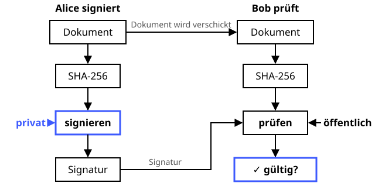

Digitale Signatur
Die Unterschrift unter dem Rezept, die niemand fälschen kann.
Definition
Eine digitale Signatur ist das elektronische Gegenstück zur Unterschrift: Der Absender signiert mit seinem privaten Schlüssel, und jeder kann die Signatur mit dem öffentlichen Schlüssel prüfen. Anders als beim HMAC kann nur der Besitzer des privaten Schlüssels signieren – er kann die Unterschrift später also nicht abstreiten.
Zutaten
- Schlüsselpaar, z. B. ECDSA mit Kurve P-256, Ed25519 oder RSA
- Hashfunktion (SHA-256)
- Das Dokument
- Ein vertrauenswürdiger Weg zum öffentlichen Schlüssel (Zertifikat)
Zubereitung
- Schlüsselpaar erzeugen und den öffentlichen Schlüssel verteilen.
- Den Hash des Dokuments berechnen.
- Den Hash mit dem privaten Schlüssel signieren.
- Dokument und Signatur verschicken.
- Der Empfänger berechnet selbst den Hash und prüft die Signatur mit dem öffentlichen Schlüssel.
- Gültig? Dann stammt das Dokument vom Schlüsselinhaber und ist unverändert.
Skizze

Signiert wird mit dem privaten Schlüssel (blau), geprüft mit dem öffentlichen. Anders als beim HMAC kann Bob selbst keine Signatur erzeugen.
Skizze erstellt von Claude (KI)
Demo
Platzhalter für die Demo
Tipps
- Den privaten Schlüssel nie herausgeben – am besten liegt er auf einer Smartcard oder in einem Sicherheitschip.
- Signieren ist nicht Verschlüsseln: Der Inhalt bleibt für alle lesbar.
- Signieren lohnt nur, wenn der öffentliche Schlüssel wirklich zum Absender gehört – dafür gibt es Zertifikate.
- ECDSA braucht für jede Signatur eine frische Zufallszahl. Sony hat bei der PlayStation 3 immer dieselbe verwendet – damit ließ sich der private Schlüssel ausrechnen.
- Einsatz: Software-Updates, Git-Commits, der elektronische Personalausweis, qualifizierte Signaturen nach eIDAS.
- RSA und ECDSA sind nicht quantensicher. Die Nachfolger heißen ML-DSA und SLH-DSA.